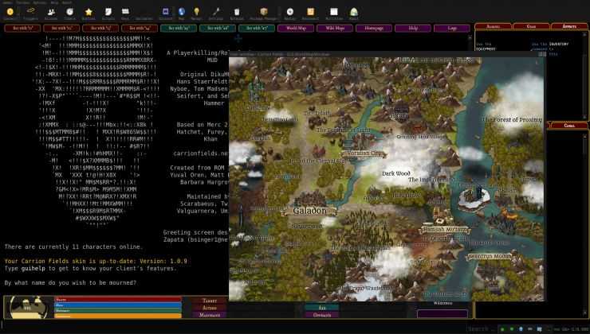

1940
A computer is on display at the world's fair called the "Nimtron." It allowed users to play the mathematical game "NIM"

1952
Since the creation of the game "Nim" multiple other playable computer programs are created. OXO and Spacewar! are among these. These games no longer have to be played on a single computer but can be played on diiferent stations.
1966-67
The first at home console was created, dubbed the "brown box." It doesn't have much success due to the boom in arcade gaming. Gamers realized that playing alone at home wasn't as fun as playing with a group in an arcade setting.

1972
The ATARI home gaming console is created. It is so successful "ATARI" became synonymous with the gaming console. Development of multiplayer games has come underway and dozens of game development companies are started, inspired by the ATARI's model of gaming.
1973-75
Pong on the ATARI is the first game ever sold commercially [Click on the Pong link under the Games menu to try it out!] 3D shooter game "Spasim" can connect to 32 consoles. planting the seeds for multiplayer gaming. XEROX creates the first LAN parties which allow a group of players all connected through ethernet, to play together.

1973-75
We see time-sharing services begin to pop up, which look a bit like our current internet service providers (ISPs). ritish Telecom also begins to do its part in encouraging online gaming. With the development of the multi-user dungeon (MUD), we see the emergence of the virtual world. British Telecom allowed the game to be played at night on the open network from 2 AM to 7 AM.
1983
The internet sees its official release, finally allowing online gaming to commence.

1984-90
Bill Gates creates Donkey and provides the BASIC code to encourage programmers to develop their own games. In 1984, BITNET develops MAD. This is the first game to be accessed by a world-wide computer network. SGI Dogfight, which becomes the first game to use the Internet Protocol (TCP/IP), is released in 1986. The game was limited to a single network, as broadcast packets were used. Workstation computers received graphics capabilities. With the release of Midi Maze, we see the first "deathmatch" style video game on the ATARI ST.
1996-98
At this period, Windows ’95 is released with great success. What also occurs is affordable Ethernet cards come onto the market. These two events provide a big break for online gaming. Over the next couple of years we see a few popular multiplayer online games released. In 1997 we have Ultima Online, and in 1998 Starcraft and Lineage are both released.
2000-02
The SONY Playstation 2 is released in 2000 as the first commercially succesful gaming console with internet capabilities. Next, in 2002, the XBOX is released coming with XBOX live, which connects players with other players around the world. Halo played a big role in making this happen. The game was so popular, and encouraged online gameplay, that multiplayer gaming flourished. Also, with the release of Halo, LAN Parties receive a massive revival.